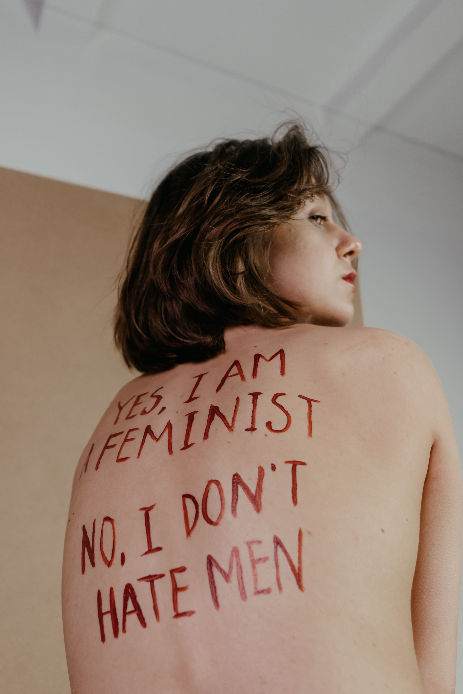
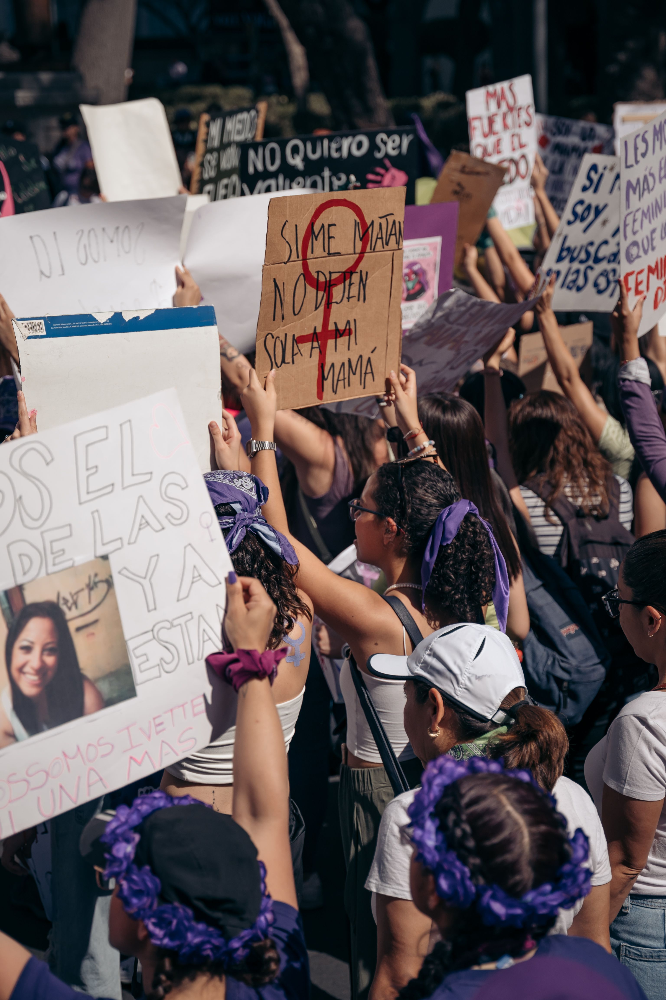
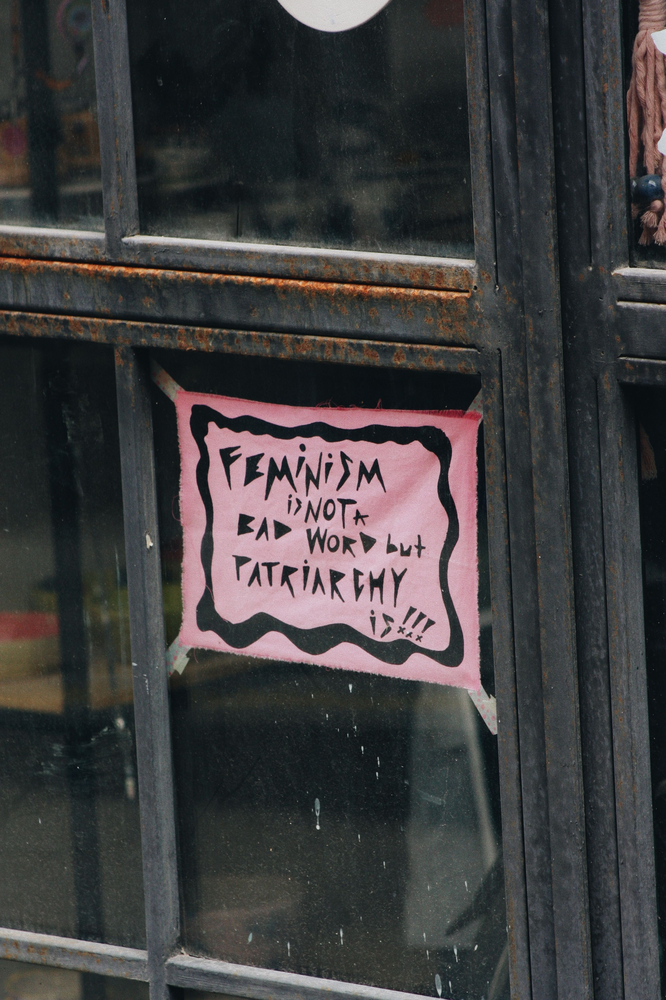

Égalité, violences, travail, représentation… En 2026, les revendications féministes restent au cœur des débats de société.
Pendant longtemps, le féminisme a été associé aux grandes luttes historiques : le droit de vote, l’accès à l’éducation, le droit de travailler ou encore l’égalité devant la loi.

Pourtant, si de nombreuses avancées ont été réalisées, l’égalité entre
les femmes et les hommes est encore loin d’être une réalité partout dans
le monde.
Aujourd’hui, le féminisme ne se limite donc plus à obtenir des droits.
Il cherche également à comprendre pourquoi, malgré les progrès réalisés,
certaines inégalités continuent de persister.
Des inégalités toujours présentes
En 2026, l’ONU estime que les femmes bénéficient en moyenne de seulement 64 % des droits juridiques dont disposent les hommes dans le monde. Les différences concernent notamment le travail, l’argent, la propriété, la mobilité, la famille ou encore la retraite. Selon l’ONU, au rythme actuel, il faudrait environ 286 ans pour parvenir à combler complètement les écarts en matière de protection juridique.
Les inégalités existent également dans le monde professionnel. À l’échelle mondiale, les femmes gagnent encore en moyenne moins que les hommes et restent moins nombreuses dans les postes de pouvoir. En 2024, elles occupaient seulement 27 % des sièges dans les parlements nationaux.
« L’égalité ne signifie pas donner davantage aux femmes, mais leur permettre de bénéficier des mêmes droits et des mêmes possibilités. »

Le féminisme à l’ère des réseaux sociaux
Le mouvement féministe a également changé de visage. Avec les réseaux sociaux, les témoignages et les revendications peuvent aujourd’hui toucher des millions de personnes en quelques heures.
Des mouvements comme #MeToo ont notamment permis de rendre beaucoup plus visibles les violences sexistes et sexuelles. Internet est devenu un espace où les femmes peuvent raconter leurs expériences, sensibiliser et s’organiser collectivement.
Mais cette nouvelle visibilité possède aussi son revers : les militantes féministes sont régulièrement confrontées au harcèlement en ligne, aux insultes et aux campagnes de dénigrement. Le débat sur l’égalité peut ainsi rapidement devenir conflictuel.

Un combat qui concerne toute la société
Le féminisme ne concerne pas uniquement les femmes. L’égalité des genres implique également de remettre en question certains stéréotypes qui touchent les hommes : l’idée qu’un homme doit être fort, ne pas montrer ses émotions ou être systématiquement le principal soutien financier d’une famille, par exemple.
Pour l’ONU, parvenir à l’égalité des genres est un enjeu de droits humains, mais également de développement social et économique. L’égalité des chances dans l’éducation, l’emploi, la santé et la vie politique bénéficie donc à l’ensemble de la société.
Alors, pourquoi le féminisme reste-t-il nécessaire ?
Parce que l’égalité inscrite dans les textes ne garantit pas toujours l’égalité dans la vie quotidienne. Les discriminations, les violences sexistes, les écarts économiques et la sous-représentation des femmes dans certains domaines montrent que le problème n’est pas complètement résolu.
En 2026, le féminisme continue donc d’évoluer. Il ne s’agit plus seulement de réclamer des droits fondamentaux, mais aussi de faire en sorte que ces droits soient réellement appliqués et accessibles à toutes.
Le combat féministe n’est peut-être plus le même qu’il y a cinquante ans. Mais tant que l’égalité restera incomplète, la question restera d’actualité.